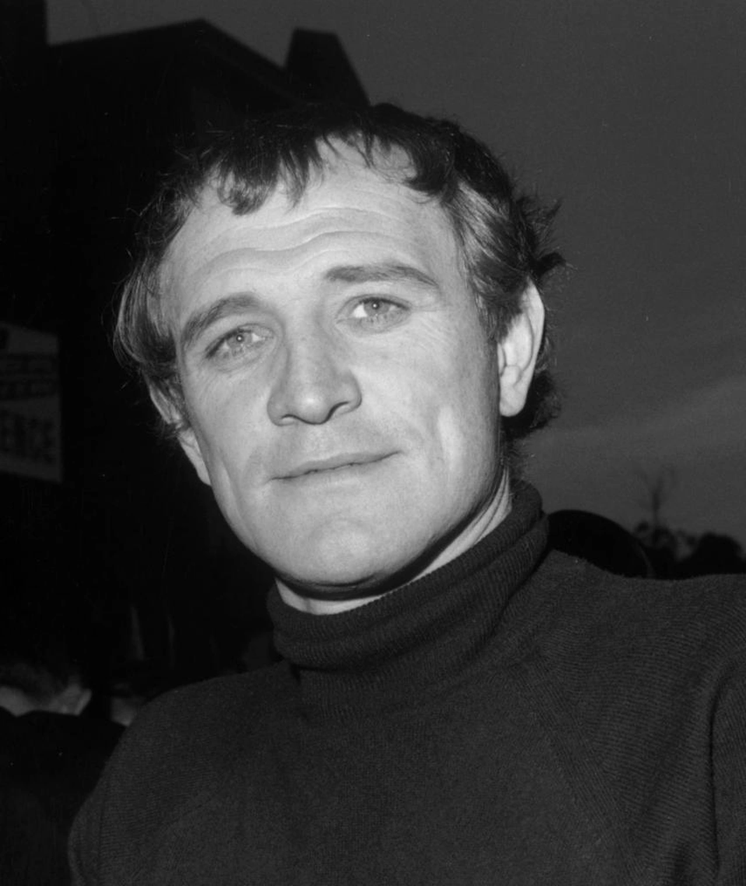
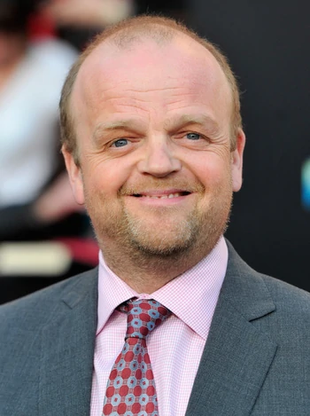
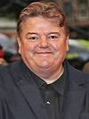

Harry Potter e a Camara Secreta
sinópse
Após as sofríveis férias na casa dos tios, Harry Potter se prepara para voltar a Hogwarts e começar seu segundo ano na escola de bruxos. Na véspera do início das aulas, a estranha criatura Dobby aparece em seu quarto e o avisa de que voltar é um erro e que algo muito ruim pode acontecer se Harry insistir em continuar os estudos de bruxaria. O garoto, no entanto, está disposto a correr o risco e se livrar do lar problemático.
lançamento:2002 - genero:Fantasia/Aventura - 88% gostaram desse filme - esta disponivel agora no HBO MAX
Elenco
  Richard Harris/Albus Dumbledore-----Toby Jones/Dobby-----Robbie Coltrane/ Rúbeo Hagrid